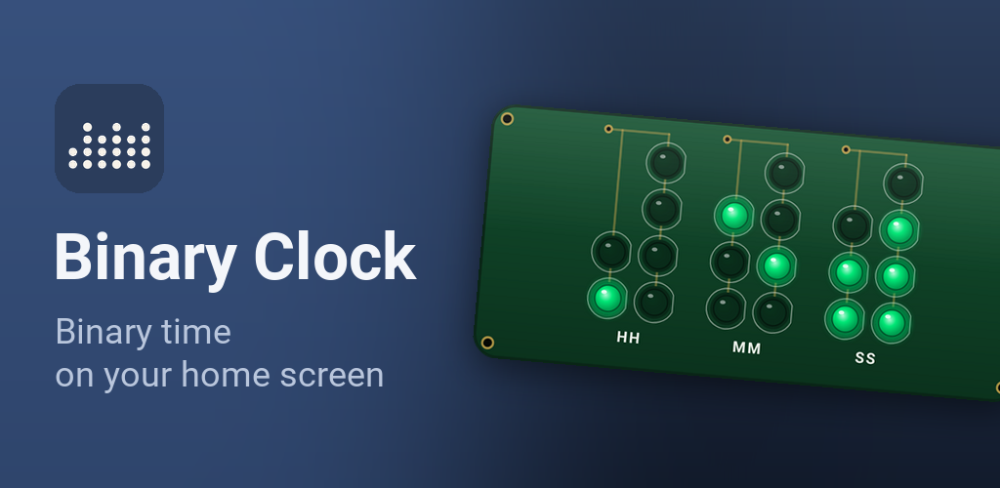
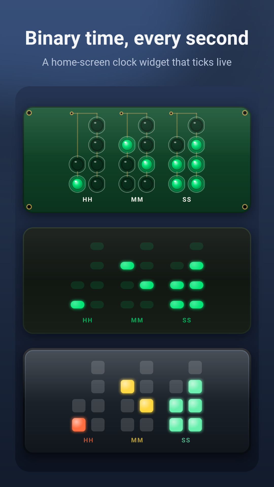
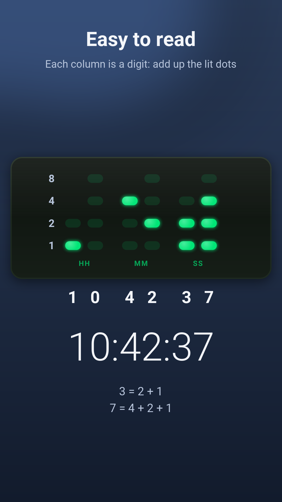
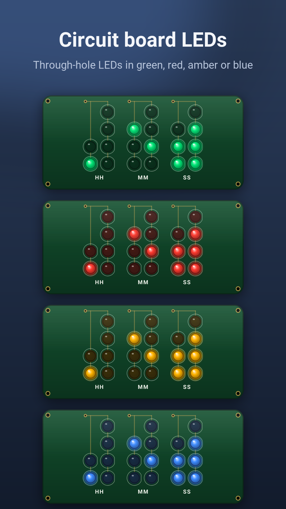
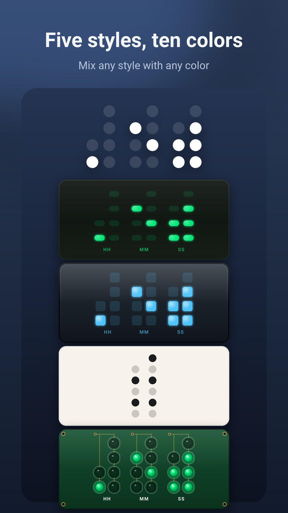
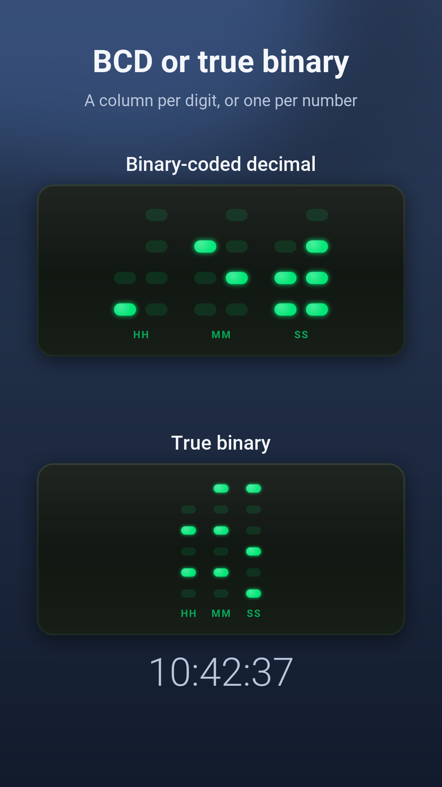
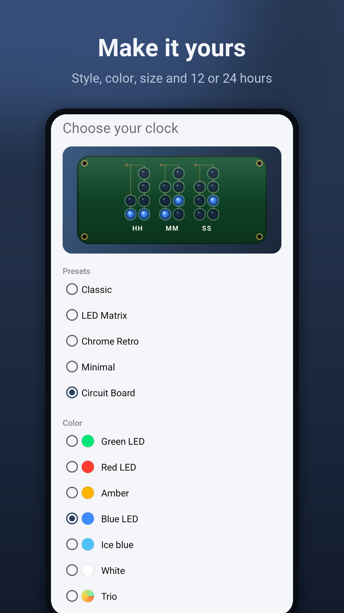

Binary Clock

Binary Clock is a home-screen widget. Rows of lights spell out the hours, minutes and seconds, and it ticks live, every second, without opening the app.






How to read it
Each column is one digit of the time. From the bottom, the lights count 1, 2, 4 and 8: add up the lit ones to get the digit. Captions under the columns mark the hours, minutes and seconds. Prefer the purist's way? Switch to true binary, with one column each for the hour, the minutes and the seconds.
What it does
- Live seconds: the widget ticks every second on its own, and keeps going after a restart. Seconds need Android's Alarms & reminders permission, which the app asks for when you choose them; without it, the clock shows hours and minutes
- Circuit Board: a green board with gold traces and round through-hole LEDs in green, red, amber or blue
- Five styles and ten colors: LED Matrix, Chrome Retro, Minimal, Classic and Circuit Board, and any color works with any style
- Your way: hours, minutes and seconds, or fewer; 12 or 24 hours; captions on or off. Pick it all with a live preview when you add the widget
- As many clocks as you like, each with its own style
- Battery saver: update once a minute instead of every second
- 11 languages: English, Spanish, Portuguese, French, German, Italian, Russian, Japanese, Korean, Chinese and Turkish
One price, nothing else
Binary Clock is a one-time $1.99 download: no ads, no in-app purchases, no subscription and no account. The app has no internet access and collects nothing. See the privacy policy.
Good to know
On Android 11 and older, the seconds step every few seconds instead of every second.
Support
Questions, feedback or bug reports: support@baylandblue.com